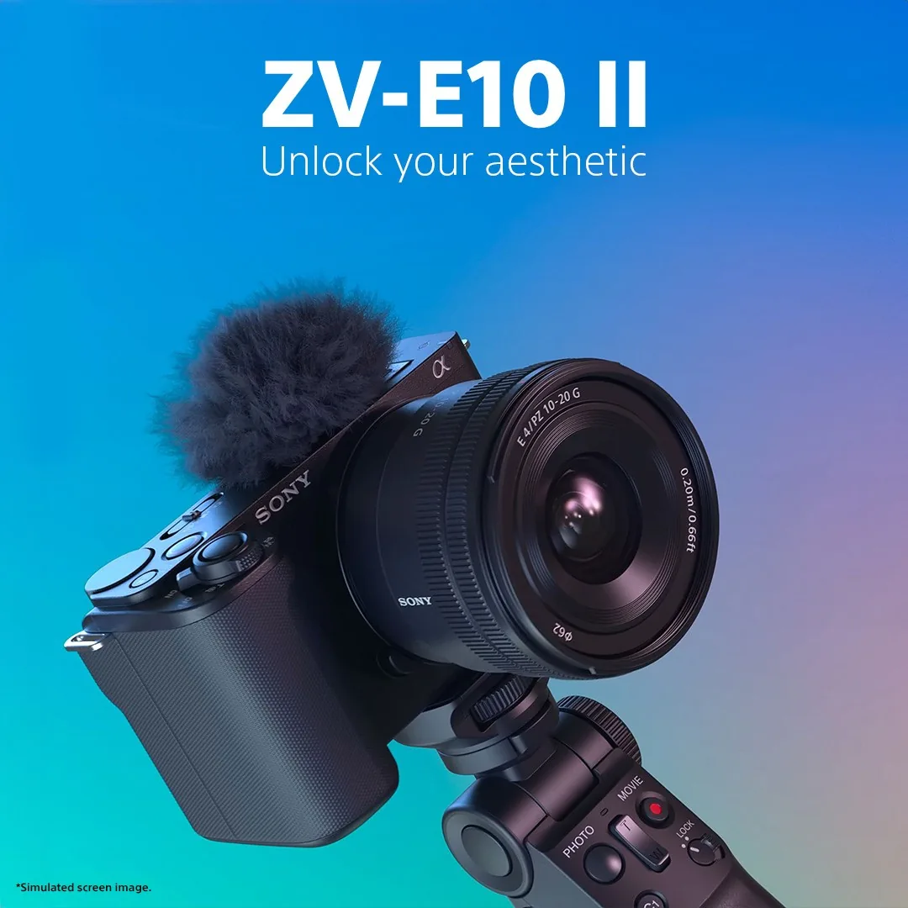
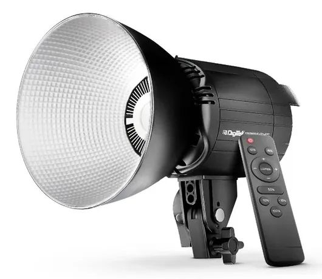
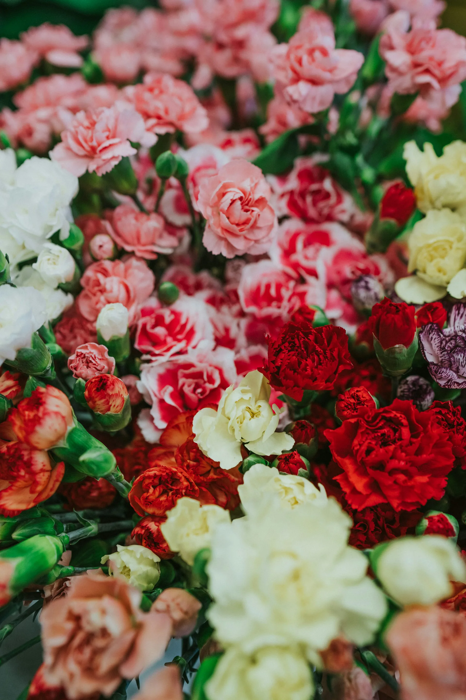
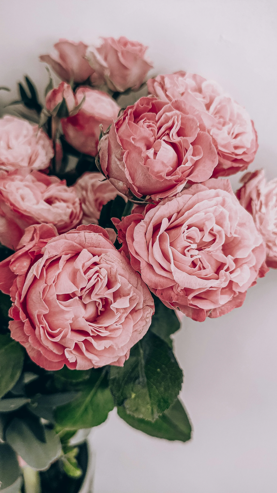

Studio equipment
Production tools available in the studio.
Core cameras, lighting, microphones and workstations used across Time 2 Talk studio sessions.
| S.No. | Type | Equipment | Brief specifications | Qty. | Photo |
|---|---|---|---|---|---|
| 1 | Camera | Sony Alpha ZV-E10M2K | Sony E-mount · CMOS sensor · digital stabilization · interchangeable-lens video camera | 1 |  |
| 2 | Lights | DIGITEK Lite DCL-150WBC Combo | Constant illumination · adjustable brightness · 3000K–6500K colour temperature | 2 |  |
| 3 | Laptop | HP Victus Gaming Laptop | AMD Ryzen 5 5600H · 64-bit Windows workstation | 1 |  |
| 4 | Laptop | HP Pavilion Gaming Laptop | Intel Core i7-10750H · 64-bit Windows workstation | 1 |  |
| 5 | Wireless Mic | Hollyland Lark M2 | 48 kHz / 24-bit wireless lavalier system · noise cancellation | 1 | |
| 6 | Wired Mic | MAONO PD200X | Dual-mode output · voice-isolation features | 1 |  |
Equipment availability can vary by booking. Confirm any project-critical requirement before your session.